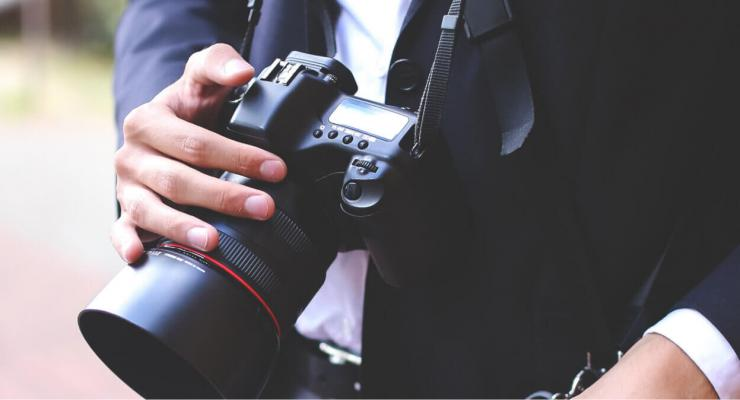
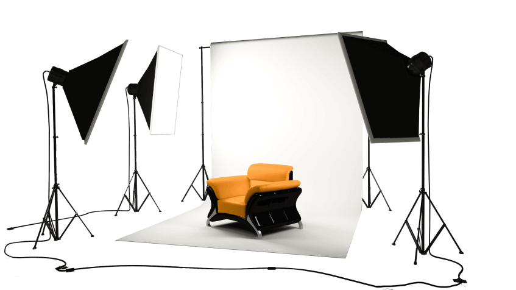

Профессиональный фотограф
Alina Studio предлагает услуги профессиональных фотографов, создающих шедевры со вкусом стиля в условиях поставленной задачи.

Профессиональный фотограф – специалист, который способен раскрыть человека, запечатлеть на качественных фотографиях его индивидуальность, характер, внутреннюю и внешнюю красоту и многое другое. Сегодня такие услуги очень востребованы, и это совершенно закономерно: время сложно остановить, потому человечество ищет идеальные способы оставить в памяти собственные памятные моменты. В наше время это возможно с помощью студийной и выездной съемки. Фотостудия «Bogdo Studio» предлагает высокопрофессиональные услуги фотографов по доступной цене. Обращаясь к нам, Вы получаете заряд положительных эмоций, отличных воспоминаний, комфортную обстановку и уникальные снимки, которые будут радовать Вас своим качеством на протяжении долгих лет. Обращаясь в фотостудию «Bogdo Studio», Вы можете быть уверенными в комфортности сервиса, качестве снимков и приятных воспоминаниях. Фотограф для фотосессии подготовит правильный свет, подберет удачные ракурсы, линзы. Обязательно специалист расскажет, как принимать гармоничные позы без утраты естественности. Съемка может воплотить Ваши смелые идеи и задумки, но, если таковых нет – мы подскажем, какие варианты и сюжеты можно использовать. Для Вашего комфорта фотограф посоветует аксессуары, которыми можно разбавить или подчеркнуть концепцию съемки.
